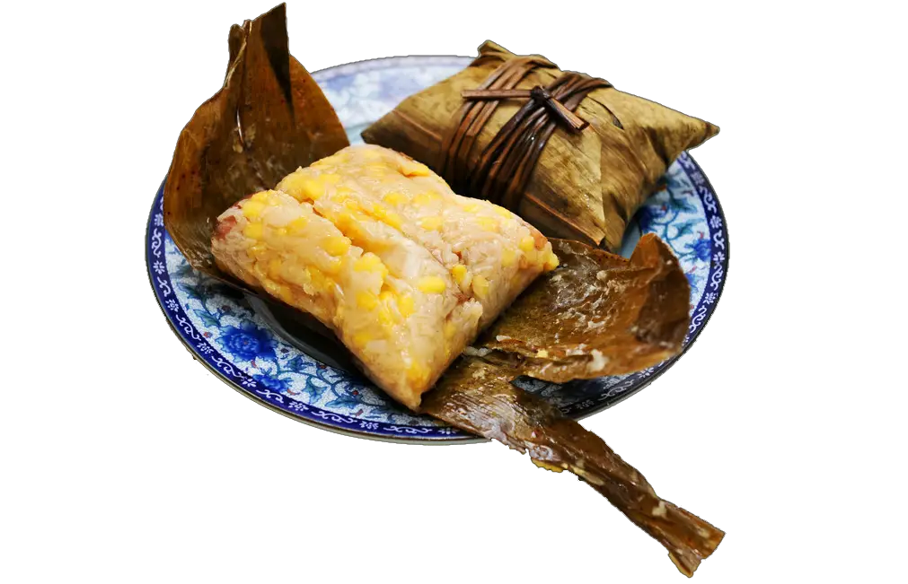

 Congris 10 CUP Congris Un plato de congris, 300g. Ideal para compartir en familia o disfrutar en cualquier ocasión. Ingredientes Arroz Frijoles negros Especias 10 CUP Cerrar
Ropa vieja 10 CUP Ropa vieja Contiene 250g de carne. Ideales para compartir en familia o disfrutar en cualquier ocasión. Ingredientes Carne de res Especias Arroz 10 CUP Cerrar
Tostones rellenos 10 CUP Tostones rellenos Cada paquete contiene 8 tostones, 80g por unidad. Ideales para compartir en familia o disfrutar en cualquier ocasión. Ingredientes Platano Maduro Salsa Casera Carne de Res 10 CUP Cerrar
Tamales 10 CUP Tamales Cada paquete contiene 5 tamales, 150g por unidad. Ideales para compartir en familia o disfrutar en cualquier ocasión. Ingredientes Maíz Carne de cerdo Especias Hojas de maíz 10 CUP Cerrar